PAUSE
停下腳步，給自己一段重新整理的時間。
LIFESTYLE SELECT BRAND
A lifestyle select brand designed for your everyday rhythm.

PROJECT OVERVIEW
Pause & Pausa 是一個以慢生活為核心的生活選物品牌， 透過品牌識別、包裝設計、商品應用， 建立溫暖、安靜且一致的品牌體驗。
Pause & Pausa
Lifestyle Select Brand
Brand Identity / Packaging / UI Visual
Illustrator / Photoshop / Mockup
BRAND STORY
在快速運轉的生活中，人們常常忽略休息與感受當下的重要。 Pause & Pausa 因此誕生，希望透過簡約、溫暖且具有質感的生活選物， 陪伴使用者在忙碌日常中保留片刻喘息，重新找回屬於自己的生活節奏。
BRAND PHILOSOPHY
品牌以「放慢、呼吸、感受、生活」作為核心理念， 將日常物件轉化為提醒人們放慢步調的生活符號。
停下腳步，給自己一段重新整理的時間。
深呼吸，在日常節奏中找回安定感。
感受當下，留意生活中細小卻重要的片刻。
享受生活，讓日常習慣成為溫柔的儀式。
TARGET AUDIENCE
目標族群設定為重視生活質感、喜歡簡約風格， 並希望在忙碌日常中保留個人節奏的使用者。
上班族、自由工作者與注重生活品質的族群。
生活步調快速，重視居家、辦公與日常儀式感。
偏好簡約、溫暖、低彩度且具有質感的視覺風格。
希望透過日常物件找到平衡、放鬆與自我照顧。
DESIGN PROCESS
從品牌概念出發，逐步發展 Logo、色彩、圖形語言、 包裝商品視覺，建立完整且一致的品牌系統。
分析慢生活品牌、生活選物與簡約風格市場。
建立「Pause / Breathe / Feel / Live」作為品牌核心。
設計 Logo、品牌色彩與 Rhythm Line 圖形語言。
延伸至包裝、商品、品牌視覺展示。
LOGO SYSTEM
Logo 以字母 P 作為品牌起點，結合心跳線作為主要識別符號。 心跳線象徵生活仍持續流動的節奏，也呼應品牌希望提醒人們 在忙碌之中停下腳步、重新感受生活的核心精神。


COLOR SYSTEM
品牌色彩以溫暖中性色為主，透過米色、霧黑、品牌金與柔和灰階， 營造安靜、溫柔且具有生活質感的視覺氛圍。
#F5F1E8
#1F1F1F
#C8A45A
#FFFAF2
#B8B1A8
GRAPHIC SYSTEM
Rhythm Line 延伸自 Logo 中的心跳線，象徵生活節奏、呼吸與片刻停留。 此圖形語言應用於包裝、杯墊、商品與網站視覺中， 建立一致且具辨識度的品牌印象。
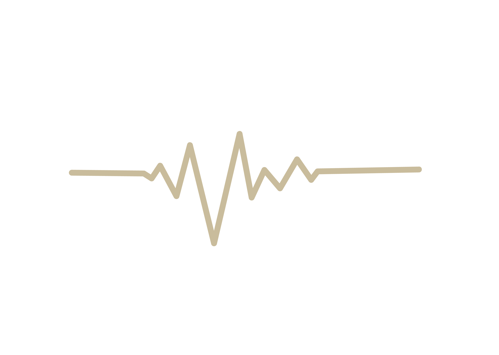

PACKAGING DESIGN
包裝延續暖米色、霧黑色與品牌金作為主視覺，搭配極簡 Logo 與 Rhythm Line。 透過留白、柔和色調與簡潔排版，營造安靜且具有儀式感的開箱體驗， 讓使用者從打開包裝的瞬間進入 Pause & Pausa 的生活節奏。
PRODUCT COLLECTION
商品延續品牌識別與 Rhythm Line 圖形語言， 將品牌理念融入馬克杯、保溫杯、杯墊、筆記本與明信片等日常物件中。
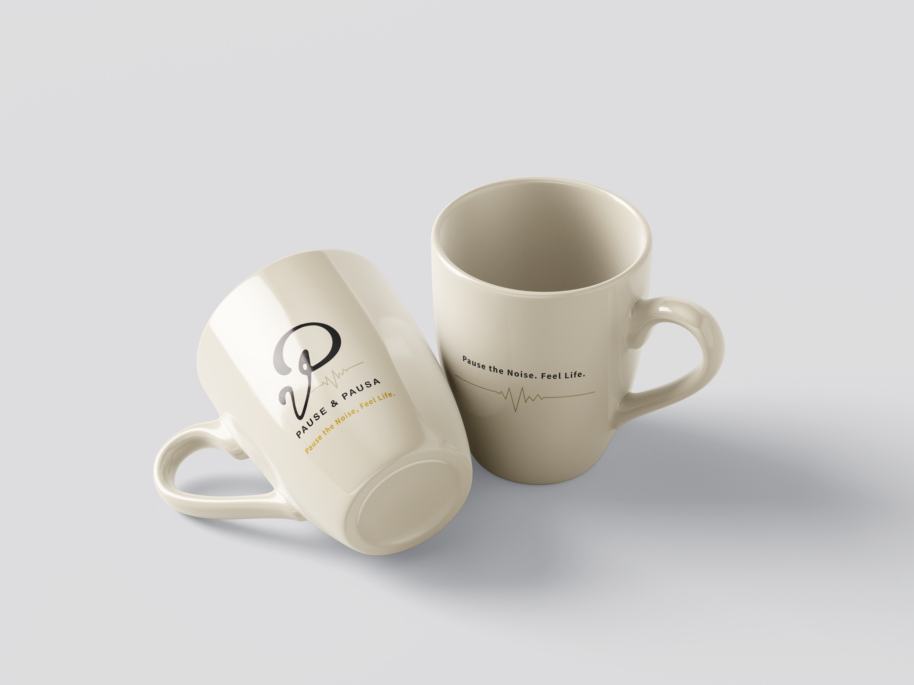
Designed for your morning ritual.
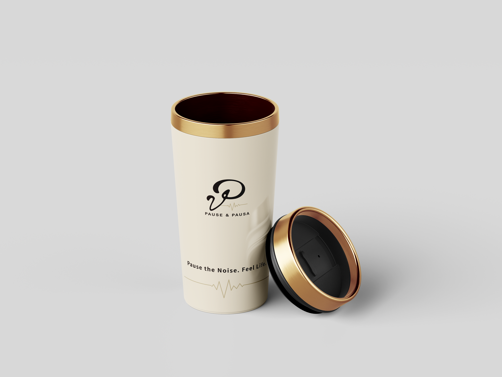
Carry your rhythm.
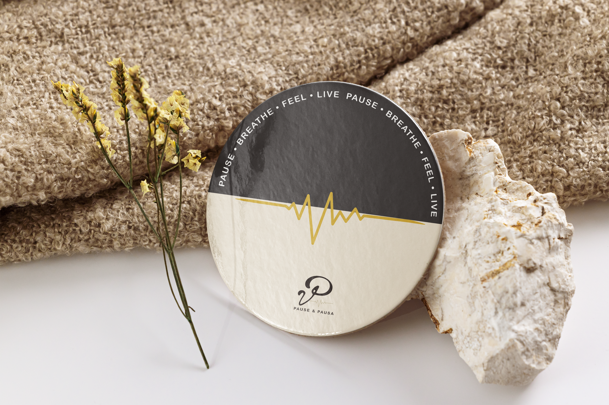
A small reminder to slow down.
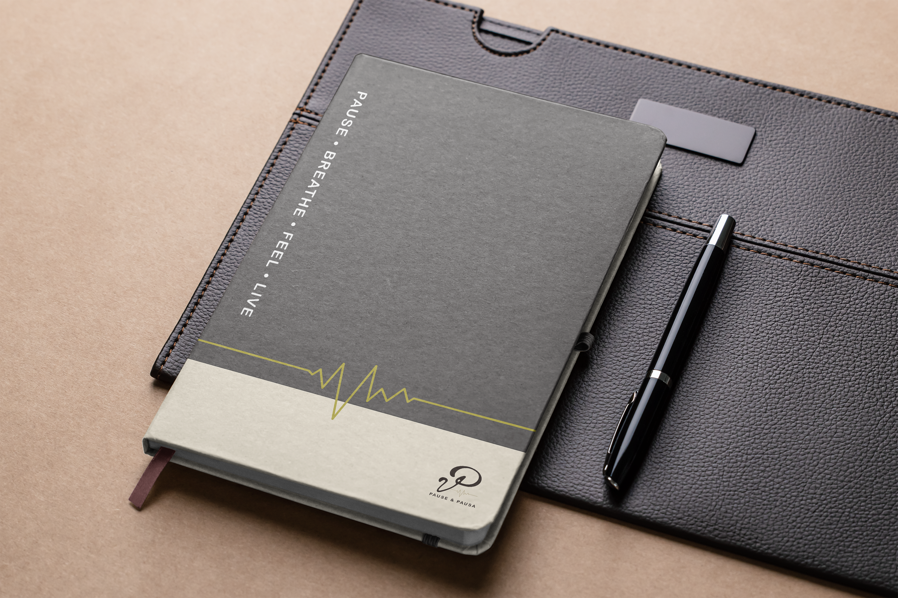
Capture every quiet inspiration.
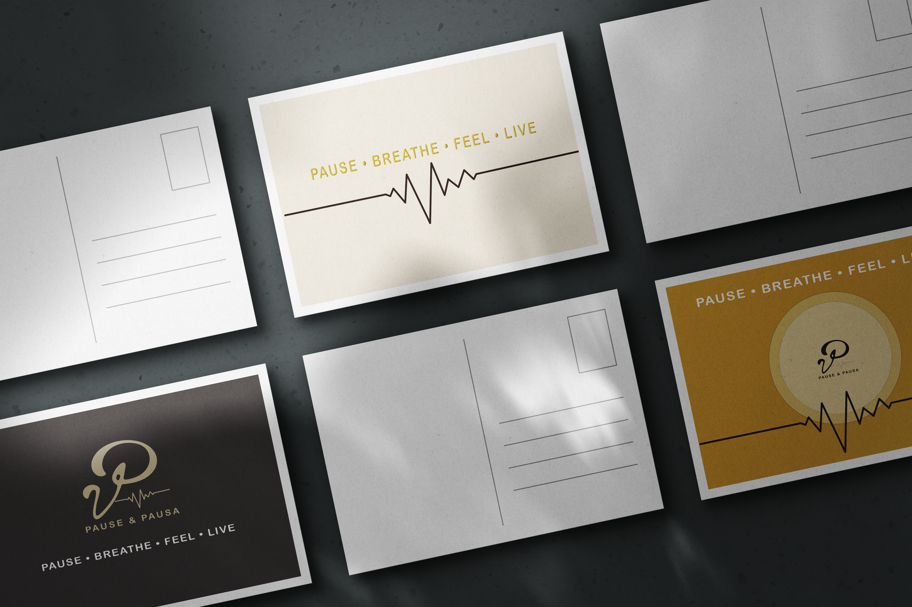
Send a quiet note.
VISUAL APPLICATIONS
將品牌識別延伸至商品主視覺、商品詳情頁、社群貼文與包裝促銷圖， 建立一致的品牌視覺應用系統。
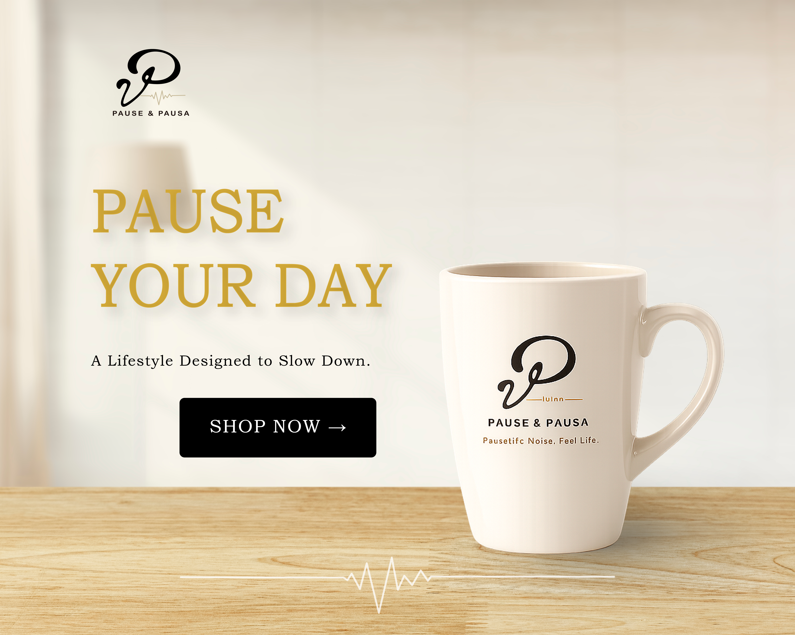
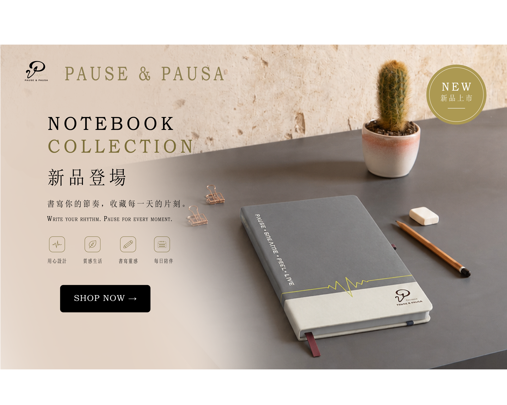
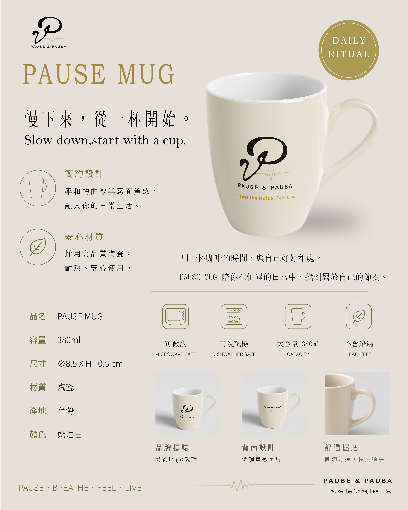
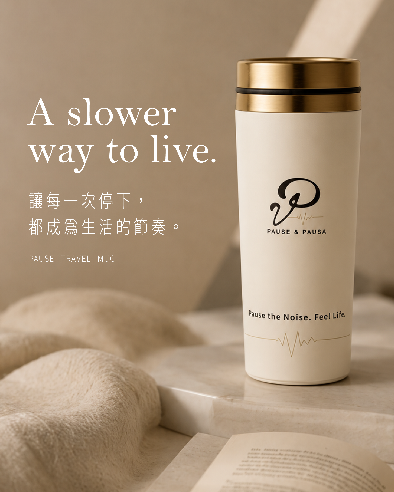
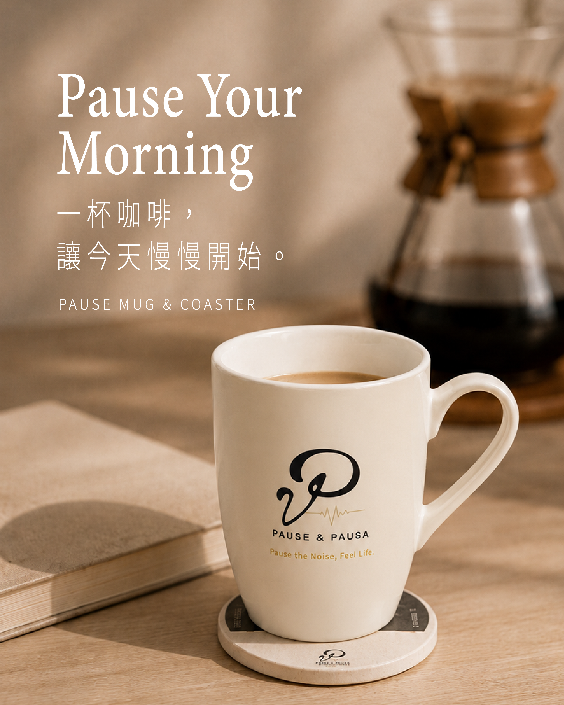
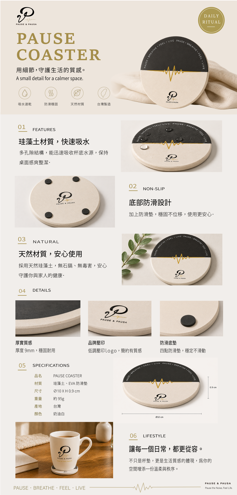
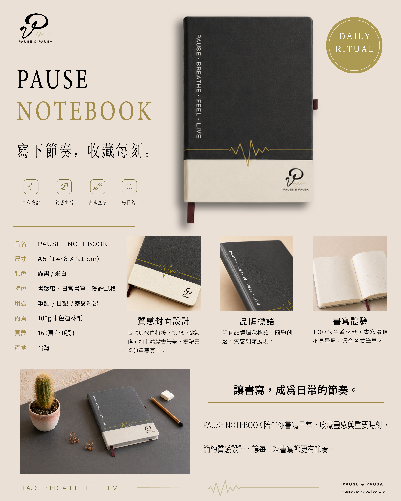
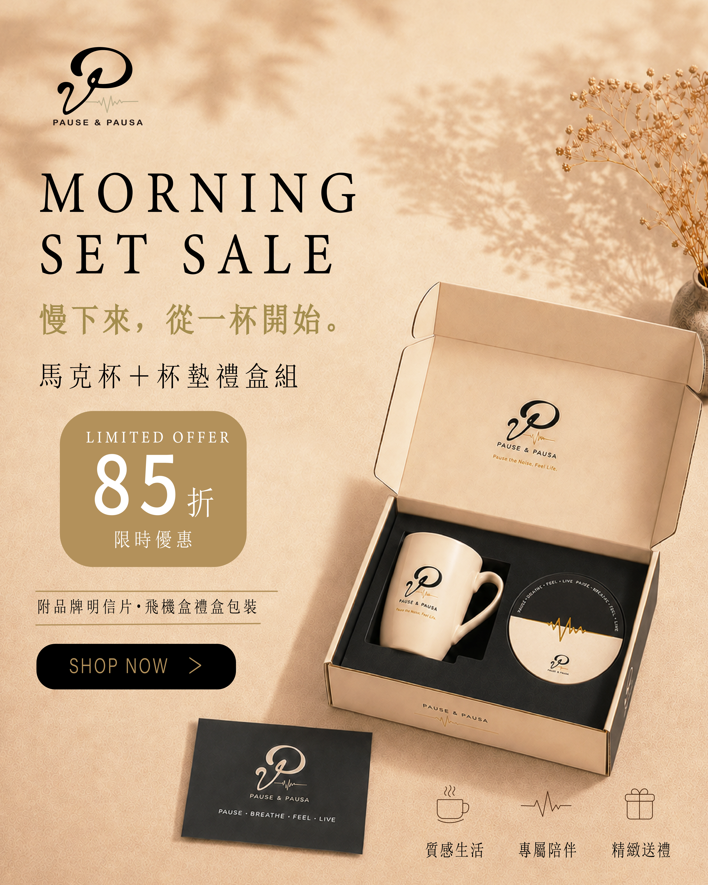
Every beat, every moment.
FINAL SHOWCASE
以品牌識別、商品視覺與包裝應用，建立一套溫暖且一致的生活選物品牌體驗。